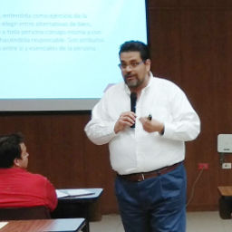

Ética corporativa y elaboración de plan para erradicar la corrupción

Miguel Monroy Robles
El Ing. Miguel Monroy Robles es egresado de la carrera de Ingeniería Industrial y de Sistemas en el Tecnológico de Monterrey y estudió la Maestría de Sistemas de Manufactura en el mismo Instituto.
En el área académica trabajó para el Tecnológico de Monterrey Campus Saltillo como DHE de la Carrera de Ingeniero Industrial y de Sistemas. Director del Centro de Competitiva y Director Académico de la División de Profesional. Ha sido consultor del Programa de Incubadoras de Empresas y profesor de cátedra desde hace 28 años en diferentes universidades de la región.
Fue Presidente del Capítulo Profesional del Instituto de Ingenieros Industriales en Coahuila y Presidente de la Asociación de Exalumnos del Tecnológico de Monterrey en Saltillo.
Coordinador General del arranque e implementación del Modelo Mexicano de Formación Dual en el Estado de Coahuila.
En el área técnica y profesional, trabajó para Industrias John Deere y Textron Automotive Company, en las áreas de operaciones y manufactura.
Fue Director para México de la empresa TNT Logistics (ahora CEVA Logistics) donde arrancó proyectos globales para la industria automotriz y lanzamiento de nuevos productos.
En el servicio público, trabajó como Director de Promoción en la Secretaría de Desarrollo Económico del Estado de Coahuila para atender el arranque y atracción de empresas del Parque Industrial Alianza Derramadero.
Se desempeña actualmente como Director General de COPARMEX Coahuila Sureste.
En temas de participación ciudadana dentro de Coparmex ha sido coordinador en 3 elecciones del programa de observadores electorales, del programa Participo-Voto-Exiio de la implementación de la plataforma Data Coparmex en la región y participó activamente en los trabajos en el Estado para conseguir la aprobación de la Ley General de Responsabilidades Administrativas (Ley 3 de 3).
Es miembro de los Comités y/o Consejos Directivos del Conalep Coahuila, del CECYTE Coahuila, de la Universidad Tecnológica de Saltillo, de la Universidad Tecnológica de Coahuila. del Subcomité de Evaluación de Proyectos del INADEM en el Estado, del Consejo Estatal Para la Educación Superior, del Consejo Estatal para la Educación Media Superior del Consei Estatal de Productividad y del Patronato de Bomberos de Saltillo.
Fungió junto con su familia, como coordinador del apostolado Familia Misionera durante de 5 años, atendiendo poblados del municipio de General Cepeda.